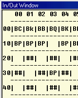
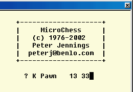

|
|
6502 Microchess. By Lee Davison. |
|
The program.Many years ago, when a 6502 and a few k or RAM were cutting edge in home computing, I tried, and failed, to get the KIM version of MicroChess to run on my Compukit UK101.
I recently found the source and, in a fit of nostalgia, made this version which runs on Michal Kowalski's 6502 simulator.
This version is posted with the permission of Peter Jennings, peterj@benlo.com

 The game.Once you have the source (see later) you will need to load it into the simulator, assemble it, and the run it in the debugger.
Notation.Each square on the chess board is identified by a two digit number as shown here. The first digit specifies the rank (0x to 7x) from the computer's end of the board. The second digit specifies the file (x0 to x7) from the player's left. Moves are made by the FROM square and the TO square using this notation.
Command keys.Few keys are needed to play. The original KIM had only a hex kaypad and a few command keys. This version has code to interpret standard ASCII codes in their place. Alpha keys can be used in either upper or lower case, both have the same effect.
[C] This key [C]lears the internal chessboard and resets it to begin another game. The board is set up with the computer playing white.
'? Reset 00 00' is displayed instead of a move to indicate that the board has been reset.[E] This key [E]xchanges the two sets of pieces without the actual position of the board being changed.
'? Exchange 00 00' is displayed instead of a move to indicate that the exchange has been made.
If [C] then [E] is pressed, the board will be set up to begin a game with the computer playing black.
If [P] followed by [E] followed by [P], and so on, is pressed the computer will play a game against itself.[P] This key tells the computer to [P]lay its move. While the computer decides on the best move it will flash the '?' character on the move line and, sometimes, display the move it's deciding on.
[ENTER] This key is used to register the player's move. It moves the piece on the FROM square to the TO square. This can be used to move one of the computer's men if desired.
Entering moves.The source.Your moves are entered into the game numerically using the notation described above. You do not enter piece being moved, just the FROM and TO square locations.
As move numbers are entered they scroll from right to left through the TO and FROM digits, the FROM square piece is updated after every key. Should you make an error while entering the move just re-enter the move and the display will scroll to the left until the correct move is displayed.
While you are entering your move the piece located on the FROM square is displayed on the left of the status line after the '?' character. There is no indication of the pieces colour, it is up to you to move only your own pieces.
When you are sure the move you've entered is the correct one press the [ENTER] key to register the move on the board. Once you have pressed [ENTER] the display confirms the move by showing the piece now in the TO square and the FROM and TO squares.
You may make as many moves like this as you wish and may move either your own men or the computer's. No check on the legality of the move is carried out. Illegal moves will be executed just as legal moves, so you should be carefull that you do not accidentally make an illegal move. There is no warning if your king is in check, you must be careful not to leave this situation after your move. If you do the computer will usually take your king on its next move if possible.
The source is changed from the original source to use the ASCII input/output of the simulator. This roughly follows the suggestions in the KIM MicroChess programmers manual on teletype I/O.
Where code has been added it has lower case comments and where code has been changed the original code has usually been commented out, but otherwise left in place. The main strategy and computer play routines are essentially unchanged from the original.
The OCRed source that I worked from had some transcription errors. Though I found and corrected some, others may remain.
You can either view the source as html or download the source as a zip
archive.
| Last page update: 22nd Februaru, 2005. | e-mail me
|